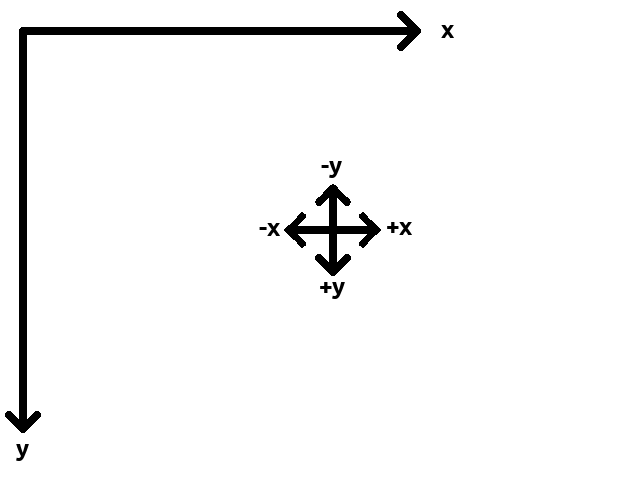
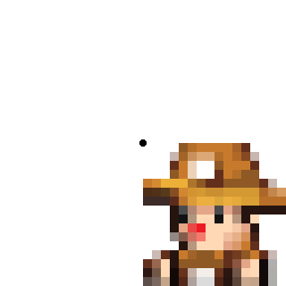
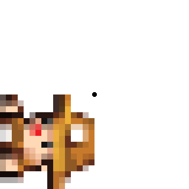
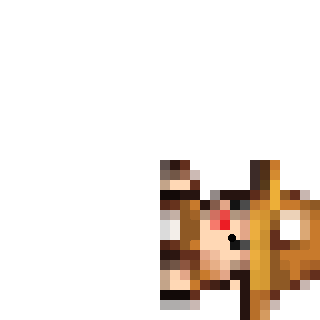
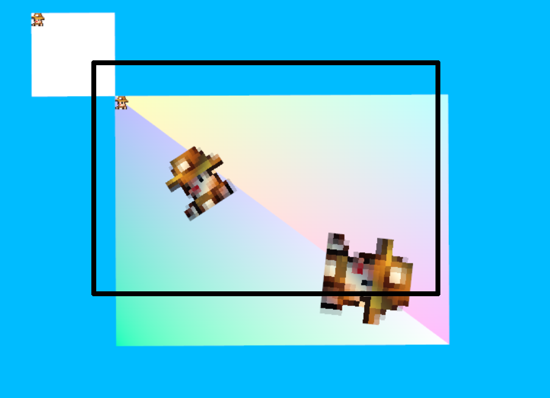
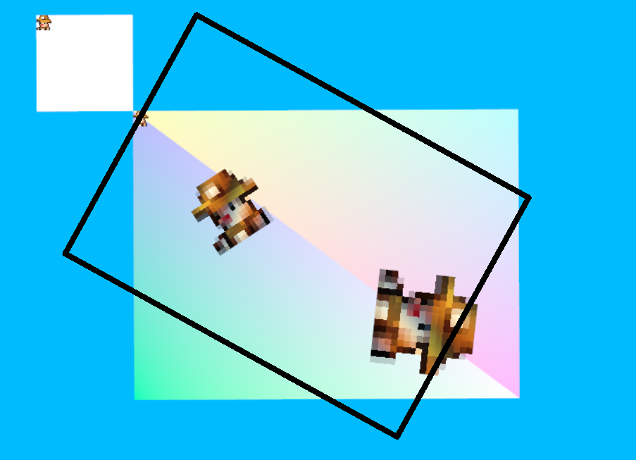
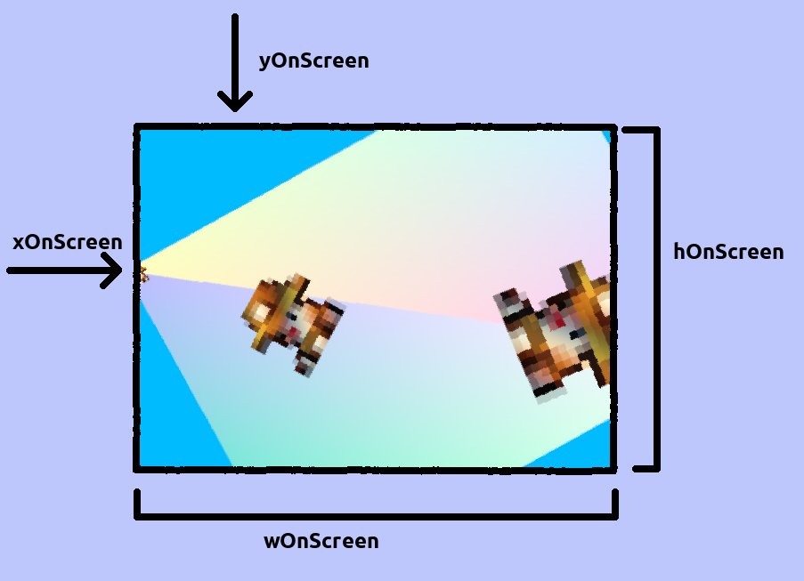

|
Vulkan2D
2D renderer written in C using Vulkan and SDL2
|
Vulkan2D (VK2D) is a 2D/3D renderer written in C with Vulkan for small 2D games. It is simple enough to use, but of course there is this guide to help with some of the details.
Everything that will be mentioned in this guide is mentioned in greater detail in the documentation for any given function. Feel free to generate the doxygen docs or simply read the header file containing the function for more information. The functions of interest to the average user will be vk2dRenderer*, vk2dTexture*, vk2dPolygon*, vk2dCamera*, vk2dModel*, and vk2dShader*.
Controlling the renderer is quite simple and only requires a few things:
Outside of those basics, there is a lot you can do with the renderer. Here are some of the more interesting functions with a basic explanation:
Drawing in VK2D is done through the renderer, the draw functions at the time of writing are
They all also have some macros to make them a little less cumbersome to use. Check the documentation for more details on each one, as only some of the FAQ stuff will be covered here.
In VK2D, coordinates start at the top-left of the screen and go left-to-right.

In effect, something drawn with a y-value of 300 will be further down the display than something drawn with a y-value of 100. This means the y-axis is opposite to how you might be used to it in math - it will make more sense when you start working with it. The x-axis is "normal" though.
Rotation is always done with radians in VK2D and all rotation follow the same pattern:
All rotations start from what would be East on a compass and go clockwise. In addition, a texture/rectangle origin of 0/0 represents the top-left corner just like screen space. This means that if you were to take a texture such as

and rotate by half of pi, you would get

(It moved to the side.)
If you were to set the origin to half of the texture's width and height, you would instead get

Notice how it rotated in place instead of moving to the side.
By default, circle's origins are at their center, however. 3D models play by completely different rules defined by your models and however your 3D cameras are set up.
Textures are the primary way of drawing images to the screen. You can load textures with vk2dTextureLoad and vk2dTextureFrom, then draw them however you want. More interestingly, you can create textures to render to with vk2dTextureCreate. Textures created this way can be rendered to in the same way you would draw to the screen, just call vk2dRendererSetTarget on it then you can render whatever you want to the texture. This is useful when you want to render a lot of something once, then just display that instead of rendering a lot of it every frame. Some common pitfalls to avoid here are:
Additionally, texture targets have a coordinate space identical to that of the screen by default - the origin is the top-left and the y-axis goes down. You may use vk2dRendererSetTextureCamera to use user-defined cameras on texture targets instead of their default texture space. This still has the side effect of ignoring the cameras' xOnScreen, yOnScreen, wOnScreen, and hOnScreen parameters because the viewport will simply be set to the texture's dimensions.
Strongly related to drawing textures is sprite-batching. As of right now, only textures are batched automatically, meaning drawing textures is heavily hardware-accelerated to be as fast as possible since that's probably what 90% of your drawing will be in a game. To better make use of this feature, try to keep as much texture drawing together as possible, since everytime you use a draw command other than vk2dRendererDrawTexture the current batch is flushed. Alternatively, you may just build your own list of VK2DDrawCommands and submit them with vk2dRendererAddBatch as to give yourself complete control over when your sprite batch is submitted. This, however, is a very minor optimization and in general even blatantly disregarding this feature will still result in good performance as most of the heavy lifting will be done on the GPU all the same.
VK2D provides a few drawing primitives, but if you want more detailed shapes, you may load your own with vk2dPolygonShapeCreateRaw and vk2dPolygonCreate. vk2dPolygonShapeCreateRaw lets you specify your own vertices with specified colours, but the input must be triangulated; the example in examples/main does this. vk2dPolygonCreate lets you create arbitrary polygons with just a list of vec2's, and will automatically triangulate the input. Polygons created with vk2dPolygonCreate will be solid white and their colour can be modified by changing the renderer's colour modifier.
Cameras are a way to look into the game world with lots of powerful features. You may create up to a certain number of cameras yourself, and by default the renderer will render to all of them at once to allow for things like mini-maps or split-screen (see the split-screen example in examples/ for implementation details). You may also use vk2dRendererLockCameras to force the renderer to only render to a specific camera.
The first camera is always reserved for the renderer, you may refer to it as VK2D_DEFAULT_CAMERA and while you may update it, it's recommended to leave it for UI drawing because it will be changed by the renderer without warning whenever the window is resized.
To create and use a camera, you need a camera specification (VK2DCameraSpec) and camera index (VK2DCameraIndex). The spec is how you provide the renderer with the data it needs to render your world, and the index is how you keep track of the cameras you make. Most of the spec parameters are simple and well documented, we will use some examples will be used.
In the images below the black border represents what part of the game world the camera is viewing.

Cameras simply view a portion of the game world. You may do things like rotate the camera, zoom in, and move it.

The 4 fields, xOnScreen, yOnScreen, wOnScreen, and hOnScreen control the viewport for the camera. This means xOnScreen and yOnScreen controls the x and y position in the game window where the camera will be displayed from and wOnScreen and hOnScreen controls the width and height of the camera in the game window. wOnScreen and hOnScreen are completely independent from the cameras w and h variables; you may have a camera with w and h much smaller than wOnScreen and hOnScreen, in fact the example in examples/retrolook does exactly that.

Models are a way of drawing 3D models, and they are loaded in similar fashion to Polygons. You may load a model from vertices using vk2dModelCreate, which also expects that the input be triangulated. You may load models from a .obj file using vk2dModelLoad or vk2dModelFrom. All models are expected to be UV mapped and you must provide the texture yourself.
To actually draw the 3D models, you need a 3D camera. Cameras in general were described above but some specifics for 3D will be discussed here
The example examples/retrolook shows a very simple setup and usage of a 3D camera, and the example examples/main has a 3D camera moving with the mouse.
Shaders are more advanced feature that allows you to have full control over how the final pixels get rendered for any given texture. For more information, please see the shaders page.